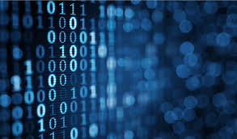
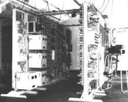
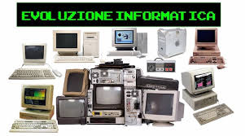
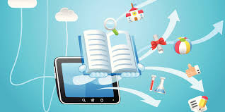
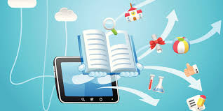
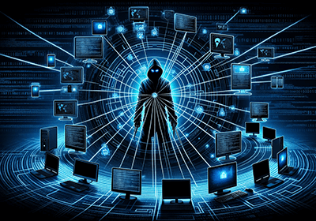
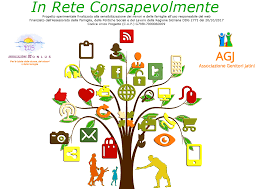
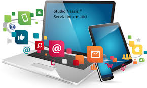
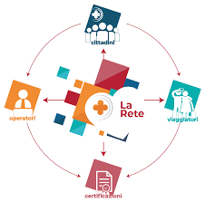

L’INFORMATICA COME SCIENZA
L'informatica è la scienza che studia i computer e i sistemi. Si occupa di come i computer usano le informazioni, come vengono progettati e come possiamo utilizzarli per risolvere problemi. L'informatica non riguarda solo l'uso di computer, ma anche lo sviluppo di software, la gestione dei dati e l'intelligenza artificiale. Per fare tutto ciò, si usano algoritmi, che sono istruzioni precise che i computer seguono per risolvere un problema. La scienza informatica è divisa in vari campi, come la programmazione, le reti, la sicurezza dei dati, l'intelligenza artificiale e la robotica. Ognuno di questi settori è molto importante per lo sviluppo della tecnologia che usiamo tutti i giorni.

torna a capitolo 1
Paragrafo 2
LA NASCITA DELL'INFORMATICA
La 1 Rivoluzione che riguarda l’informatica è la 1 rivoluzione industriale che è avvenuta con la macchina a vapore.
La 2 rivoluzione industriale porta molti nuovi cambiamenti: il ferro, il petrolio, e l'elettricità insieme anche all’avvento del fordismo.
La 3 rivoluzione industriale portò con sé ancora più cambiamenti significativi come l’energia rinnovabile,la cura per molte malattie e le nuove tecnologie.
La 4 rivoluzione industriale cioè quella in cui ci troviamo in questo momento è dominata dal mondo digitale mentre nelle altre eravamo ancora nell’analogico.
Vengono apportati molti cambiamenti tra l’industria 4.0 che ha introdotto la smart factory, una fabbrica in cui l’ai prende scelte autonome.
La 5 rivoluzione industriale non è ancora iniziata ma c’è già chi ne parla essa riguarda un futuro consapevole e valoriale per noi e per il pianeta
1940- Macchine calcolatrici meccaniche e calcolatori elettromeccanici
1957- ELEA
1981- PC IBM 5150, OSBORN 1, SINCLAIR ZX SPECTRUM, COMMODORE 64 ED ATARI 800
1983- MOTOROLA DYNATAC
1984- APPLE MACINTOSH
1985- INTEL 80386, MICROSOFT WINDOWS
1986-PRODROMI DI INTERNET
1991- LINUX
1992- WORLD WIDE WEB, USB
1995- PALM PILOT
1996- NOKIA COMMUNICATOR 9000
1998- GOOGLE
1999- HITACHI HPW-600ET
2001- IPAD APPLE
2003- AMD ATHLON 64
2004- SONY LIBRIE, FACEBOOK
2007- APPLE I-PHONE
2008- ANDROID,ANDROID
2015- WINDOWS 10
2021- WINDOWS 11

 torna a capitolo 1
Paragrafo 3
PRO E CONTRO DELLA TECNOLOGIA
PRO
AUTOMAZIONE DEL LAVORO
DIVERTIMENTO
ACCESSO ALLE INFORMAZIONI
SERVIZI COME E-LEARNING
ARCHIVIAZIONI DELLE INFO
VELOCITÀ
COMUNICAZIONE A DISTANZA
SERVIZIO COMUNE
UBIQUITÀ
PERVASIVITÀ
MIGLIORAMENTO DELLE CONDIZIONI DI VITA
 

CONTRO
DIPENDENZA DAI DISPOSITIVI TECNOLOGICI
ATTACCHI HACKER
CYBERBULLISMO
VIOLAZIONE DELLA PRIVACY
MENO PAZIENZA PIÙ IMPULSIVITÀ
FURTO D'IDENTITÀ
PRESENZA E ACCESSO A CONTENUTI INAPPROPRIATI
FAKE NEWS
NON TUTTI POSSONO INTERAGIRE CON LE TECNOLOGIE

torna a capitolo 1
Paragrafo 4
COME VIAGGIARE IN MODO CONSAPEVOLE IN RETE
Evitare qualsiasi forma di bullismo digitale; Evitare di condividere spam; Essere concisi e andare al punto; Utilizzare il buon senso perché su Internet si comunica con altre persone, quindi bisogna dimostrarsi sempre educati.
Scegli con cura.
Custodisci gelosamente.
Pensa prima, condividi poi.
Fai attenzione.
Usa la testa, non la pancia.
Non cadere nella rete.
Aiuta chi è più in difficoltà.
Non fidarti di gente sconosciuta.
Scegliere con attenzione le disposizioni della privacy.
Non dedicare troppo tempo ai social.
Non offendere e discriminare gli altri.
Non condividere contenuti offensivi o che legano la privacy altrui.
Non fidarsi degli sconosciuti.

torna a capitolo 1
Scegli con cura.
Custodisci gelosamente.
Pensa prima, condividi poi.
Fai attenzione.
Usa la testa, non la pancia.
Non cadere nella rete.
Aiuta chi è più in difficoltà.
Non fidarti di gente sconosciuta.
Scegliere con attenzione le disposizioni della privacy.
Non dedicare troppo tempo ai social.
Non offendere e discriminare gli altri.
Non condividere contenuti offensivi o che legano la privacy altrui.
Non fidarsi degli sconosciuti.